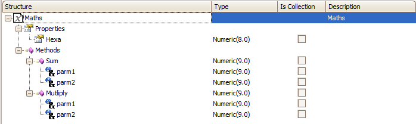
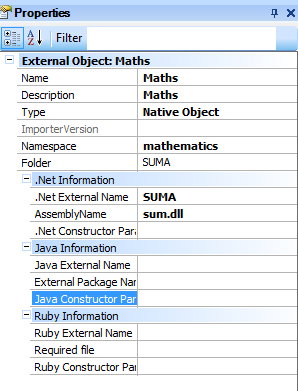
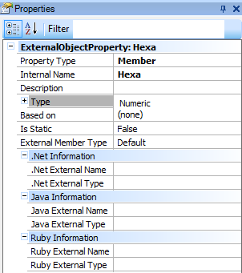
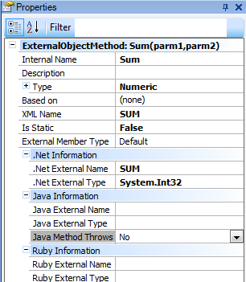
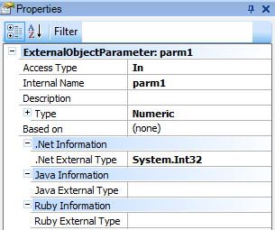

A Native External Object stores all the information (name, properties, methods and parameters) about how to access a defined class in a Java class, .Net assembly or Javascript source.
Each External Object (EO) corresponds exactly to a class of the external resource.
Once the EO is defined in GeneXus (and the methods and properties exposed by the external resource are properly mapped), the GeneXus user is able to manage these methods and properties inside the GeneXus source.

Note: For Net and Java there exist tools to help in the definition of the EO structure:
The tools can be accessed from the Tools option in the GeneXus menu (under Application Integration option).

Name: name of the EO
Description: description
Type: EO type, Native Object
Namespace: class namespace
.Net External Name: name of the external class (.dll)
Assembly Name: name of the assembly associated to the EO
.Net Constructor Parameters: list -separated by commas- of parameters to be passed to the assembly constructor. The constructor parameters are always constants.
Java External Name: name of the external class (.class)
External Package Name: name of the package where the class associated to the EO is located
Java Constructor Parameters: list -separated by commas- of parameters to be passed to the external class constructor. The class constructor parameters are always constants.
Javascript External Name: name of the external Javascript resource.

Property Type: it indicates whether it is a read only, read/write or member type property
Internal Name: internal name to be given to the property
Description: description
Type: type of data that the property will have in GeneXus
IsStatic: determines if is static or not (True , false)
.Net Internal Name: external name of the property in the .Net class
.Net External Type: external data type of the property
Java External Name: external name of the property in the Java class
Java External Type: external data type of the property
Java External Set Method: set name of the property in the Java class
Java External Get Method: get method of the property in the Java class
Javascript External Name: external name of the property in the Javascript resource.

Internal Name: internal name of the method
Description: description
Type: data type of the returned value, if any
Based on: determine if is based on any other data type
XML Name: exposed Name of the method
Is static: determines if is static or not (True , false)
External Member Type: Three possible values, default, Static , Instance
.Net External Name: external name of the method in the .Net class
.Net External Type: external data type of the returned value
Java External Name: external name of the method in the Java class
Java External Type: external data type of the returned value
Java Method Throws Exceptions: it indicates whether the method in the external class sends an exception; the default value is No
Javascript External Name: external name of the method in the Javascript resource.

Access Type: it indicates whether the parameter is an input only, output only, or input/output parameter
Internal Name: internal name of the parameter
Description: description
Type: data type that the parameter will have in GeneXus
.Net External Name: external name of the parameter in the .Net class
.Net External Type: external data type of the parameter
Java External Name: external name of the parameter in the Java class
Java External Type: external data type of the parameter
The events should always be defined as static in GeneXus.
Consider that we’ve created a Native Object type EO called "Mathss" and we’ve defined a Maths variable called &Maths.
Then, the code looks as the following:
Event enter &res = &Maths.Sum(&parm1,&parm2) EndEvent
The method returns the sum of both values. The first and second parameter are the values that are going to be added.
.Net: In the case of using EOs in order to access assemblies, the assembly or assemblies should be copied to the bin directory of the work Environment. When the application is deployed, the assemblies must be taken to production.
Java: In the case of Java classes, take the jar/zip containg the external classes have to be included in the classpath.
Javascript: The javascript resources have to be located within the rest of static resources of the web application. It needs to be referenced in the GeneXus code as follows:
- Vector and matrix values are not supported, only scalar variables are supported.
- Array data types such as String[], Date[] and so on are not supported.
- Enum data types are not supported.
- If there is an EObject method called Initialized, or another reserved word, it must be defined with another name but keeping the External Name property
External Object for iOS Devices
External Objects for Javascript